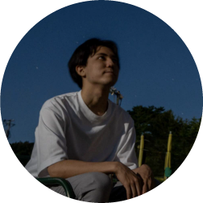

Eight Suzuki 鈴木 詠斗鈴木 詠斗 Eight Suzuki
Researcher, Artificial Intelligence Laboratory, Fujitsu Research 富士通研究所 人工知能研究所 研究員
About概要
I work on the interpretability of Transformer models. My recent research extends Integrated Gradients to set-to-set maps at module boundaries (attention and MLP) so that information flow inside a Transformer layer can be traced and diagnosed without retraining or model-specific interpreters.
I received my M.Eng. from Waseda University (Murata Lab, 2026), where I also worked as a research assistant at NICT CREATE (AI Security Research Center). I joined Fujitsu Research in April 2026.
Transformer モデルの解釈性を研究しています。最近は、統合勾配法（Integrated Gradients）を Attention と MLP の境界における集合から集合への写像に拡張し、再学習や モデル固有の解釈器なしに Transformer の層内の情報の流れを追跡・診断する手法に取り組んでいます。
2026年に早稲田大学大学院（村田研究室）で修士号を取得。在学中は NICT AIセキュリティ研究センター（CREATE）で リサーチアシスタントを務めました。2026年4月より富士通研究所に所属しています。
Publications業績
International conference国際会議
- LIG: Layer-wise Integrated Gradients for Within-Layer Flow Analysis in Transformers Eight Suzuki, Hideitsu Hino, Noboru Murata Proceedings of the 33rd International Conference on Neural Information Processing (ICONIP 2026), Melbourne, Nov 2026. To appear.採録決定 arXivcode
Domestic (Japanese)国内
Experience経歴
- Apr 2026 – present2026年4月 – 現在
- Researcher, Artificial Intelligence Laboratory, Fujitsu Research, Fujitsu Limited 富士通株式会社 富士通研究所 人工知能研究所 研究員
- Jan 2025 – Mar 20262025年1月 – 2026年3月
- Research Assistant, Center for Research on AI Security and Technology Evolution (CREATE), NICT 国立研究開発法人情報通信研究機構（NICT）AIセキュリティ研究センター（CREATE） リサーチアシスタント
- 2024
- Software engineering internshipsソフトウェアエンジニア インターン Sony, GMO Pepabo, DMM.com, KADOKAWA
Education学歴
- Apr 2024 – Mar 20262024年4月 – 2026年3月
- M.Eng., Department of Electrical Engineering and Bioscience, Waseda UniversityMurata Laboratory (advisor: Prof. Noboru Murata) 早稲田大学大学院 先進理工学研究科 電気・情報生命専攻 修士課程 修了村田研究室（指導教員：村田昇 教授）
- Apr 2020 – Mar 20242020年4月 – 2024年3月
- B.Eng., Department of Electrical Engineering and Bioscience, Waseda University 早稲田大学 先進理工学部 電気・情報生命工学科 卒業